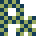

CSS Selectors
Descendant

The contents shown here are inside a <section> tag.
This is an <h3> header.
This is a <p> paragraph. This is an image within the paragraph.
Select elements that are anywhere within the parent element.
section img {
border:thick dotted red;
}
Children
The contents shown here are inside a <section> tag.
This is an <h3> header.
This is a <p> paragraph. This is an image within the paragraph.
Select elements that are only one level below the parent element.
section > img {
border:thick dotted red;
}
Because the second image is a grandchild of the section, it does not the the dotted border.
Adjacent Sibling
The contents shown here are inside a <section> tag.
This is an <h3> header.
This is a <p> paragraph. This is an image within the paragraph.
This is another paragraph.
Select an element that comes immediately after another element with the same parent element
h3 + p {
border:thick dotted red;
}
You’ll notice that the first paragraph does not have the dotted border because it does not have an <h3> sibling before it.
General Sibling
The contents shown here are inside a <section> tag.
This is an <h3> header.
This is a <p> paragraph. This is an image within the paragraph.
This is another paragraph.
Select an element that comes after (but not necessarily directly after) another element with the same parent element
h3 ~ p {
border:thick dotted red;
}
All paragraphs following the h3 are targeted.
Class and Id
.className
#idName
Pseudo Selectors
These selectors target elements that have a particular characteristic.
Pseudoclasses
Anchor
These can apply to elements other than anchors.
:link, :visited, :hover, :active
Other
:disabled, :enabled
:focus
:checked — A form element that is checked.
:selection — User highlighted text.
:lang
:nth-child(n), :nth-last-child(n)
Would you care if I blow your mind now? Check this out:
li { color: #00F; }
li:nth-child(odd):not(:last-child) { color: #F00; }
- line 1
- line 2
- line 3
- line 4
- line 5
This will alternate the coloring of every other row, but force the last row to always be blue.
:first-child, :last-child, :only-child
Examples: p:first-child means select the first paragraph that is a child.
:first-child means select the first anything that is subordinate to another element.
div :first-child means select the first anything that appears anywhere inside a div (could be multiple hits).
div>:first-child means target the first thing following a div. This one is actually pretty neat and I can see using it in several places.
:nth-last-of-type(n), :last-of-type, :first-of-type, :only-of-type
:empty An element that has no children
:root
:not(x)
:target
Pseudo-elements
:first-line
:first-letter
:before and :after
Smashing magazine has a great description of :before and :after.
Attribute Selectors
These are used to target elements based on their attributes.
Has the attribute: p[id]
Matches <p id>, <p id="this-one">
Exact match: p[id="thisOne"]
Matches <p id="thisOne">
Contains: p[id~="this"]
Matches <p id="this">, <p id="thisOne">, and <p id="and-this">
Prefix: p[id|="this"]
Matches <p id="this">, <p id="this-one">, and <p id="this-two">
Cheat Sheet
See the last page of the the CSS3 Cheat Sheet for a summary of these selectors.